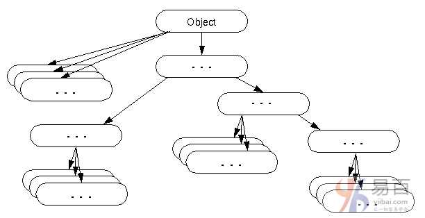

☰ 目录
42 Object类
默认情况下，Object类是java中所有类的父类。 换句话说，它是java的顶级类。
如果想引用你不知道的类型的对象，使用Object类是没有错的。请注意，父类引用变量可以引用子类对象，称为上转换。
下面举一个例子，有一个getObject()方法返回一个对象，但它可以是任何类型，如：Employee，Student等这样的类，我们可以使用Object类引用来引用该对象。 例如：
Object obj=getObject();//we don't know what object will be returned from this method
Object类为所有对象提供了一些常见的行为，如对象可以进行比较，对象可以克隆，对象可以通知等。

Object类的方法
Object类提供了许多方法。 它们如下：
8 大类方法。
| 序号 |
方法 |
描述 |
| 1 |
public final Class getClass() |
返回此对象的Class类对象。 Class类可以进一步用于获取此类的元数据。 |
| 2 |
public int hashCode() |
返回此对象的哈希码值 |
| 3 |
public boolean equals(Object obj) |
将给定对象与此对象进行比较。 |
| 4 |
protected Object clone() throws CloneNotSupportedException |
创建并返回此对象的精确副本(克隆)。 |
| 5 |
public String toString() |
返回此对象的字符串表示形式。 |
| 6 |
public final void notify() |
唤醒单线程，等待此对象的监视器。 |
|
public final void notifyAll() |
唤醒所有线程，等待此对象的监视器。 |
| 7 |
public final void wait(long timeout)throws InterruptedException |
导致当前线程等待指定的毫秒，直到另一个线程通知(调用notify()或notifyAll()方法)。 |
|
public final void wait(long timeout,int nanos)throws InterruptedException |
导致当前线程等待指定的毫秒和纳秒，直到另一个线程通知(调用notify()或notifyAll()方法)。 |
|
public final void wait()throws InterruptedException |
导致当前线程等待，直到另一个线程通知(调用notify()或notifyAll()方法)。 |
| 8 |
protected void finalize()throws Throwable |
在对象被垃圾收集之前由垃圾收集器调用。 |
我们将在下一章详细学习这些方法。